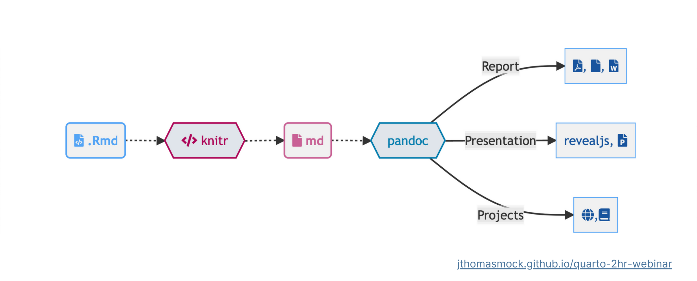

What is Quarto?
Quarto is an open-source scientific and technical publishing system.
Watch Tom Mock’s webinar, Welcome to Quarto:
What is Quarto?
Quarto® is an open-source scientific and technical publishing system built on Pandoc.
How it works


What it can do
Multilingual literate programming
---
title: "matplotlib demo"
format:
html:
code-fold: true
jupyter: python3
------
title: "ggplot2 demo"
author: "Norah Jones"
date: "5/22/2021"
format:
html:
fig-width: 8
fig-height: 4
code-fold: true
---Client-side interactivity
Different editors
Choose your tool
and get started
Need help?
- See what Quarto can do by running this in your Terminal:
#| collapse = TRUE
quarto --help- Report bugs on GitHub: https://github.com/quarto-dev/quarto-cli
- Check out the Quarto Tip a Day post on asking for help
- Check out the FAQ
- Flag friendly folks on Twitter with #QuartoPub